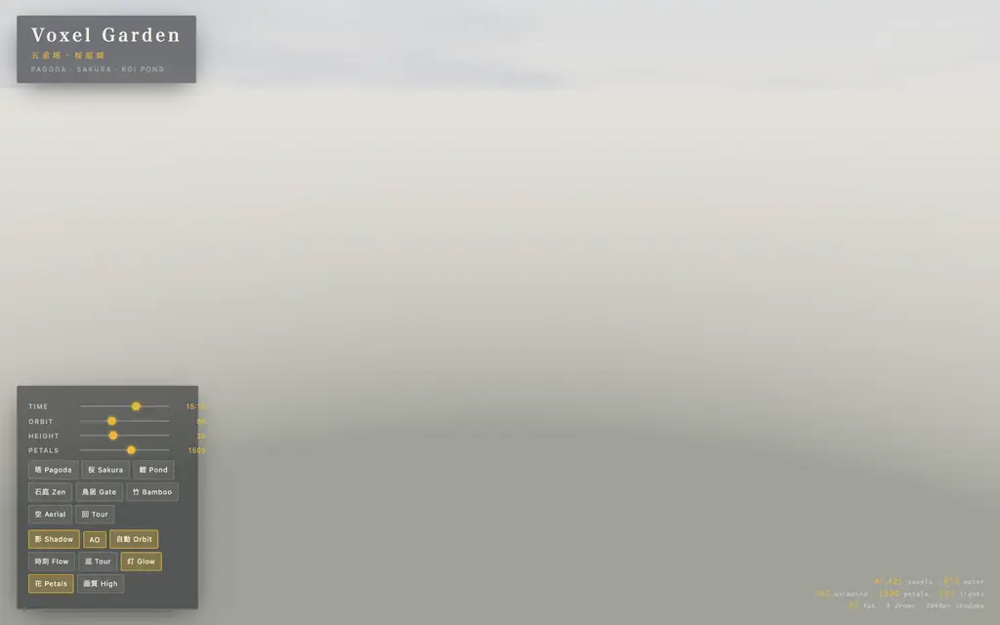

runs / 2026-10-17 / 111605-988000-baseline-bb4e8b72
自作WebGL2で五重塔ボクセル庭園を単一HTML化、生成29分・直し58分
qwen3.8-flash-next-unsloth-ud-q4_k_xl(thinking high)が、単一HTMLのボクセル庭園シーンを作れという依頼に230件のAPI呼び出し・総計5190秒で応えた。#2〜#8で描画器を7分割して約24分で書き下ろし、連結後の約58分はブラウザ起動・シェーダエラー修正・ピクセル統計による照射と点灯の反復調整に費やした。最終的にexit 0・completed、index.html(124,435バイト)1点を成果物として残した。
成果物
work/index.html（124,435 バイト）をそのまま同梱している。重いシーンもあるため、必要なときだけ起動する。
index.html
122 KB · 起動するまで読み込まない

logs/events.jsonl の画像ブロックを内容ハッシュで重複排除して時系列に並べた、制作中の検証用スクリーンショット。最終版とは限らない。
成果物の構成
| 要素 | 内容 |
|---|---|
| 成果物 | 単一index.html 2,836行/124KB/外部依存ゼロ(CDN・フォント読み込みなし)。自作WebGL2レンダラ。 |
| 描画方式 | インスタンス描画(1voxel=12 float)で5.8万ボクセルを8 draw call。シャドウマップ2048px+PCF 3×3、3Dテクスチャ占有グリッドのボクセルAO。 |
| 建物 | 五重塔(初層の金仏と光背、輪塔、斗拱、軒先提灯、風鈴、法輪の扁額)、拝殿、鳥居×2、反り橋、茶室、藤棚、石塔、祠、井戸。 |
| 自然 | 鯉池(中島・睡蓮・段々滝・渓流)、竹林、桜8本+紅葉/黒松/柳/梅、枯山水の砂紋、丹頂×2、亀。 |
| 動的要素 | 鯉7・蝶9・蜻蜓5・渡り鳥7が毎フレームアニメーション、花びら1500枚、夜は蛍86灯、鹿威しが可動。 |
| ライティング | 日中/夕暮/夜プリセット、露出中央値0.54/0.37/0.13、灯籠197個、additiveビルボードの疑似ブルーム。 |
| 検証成績 | コンソール/ページエラー0、FPS 82–90@1600×1000、構築32ms、既定画角の色分布は石837/緑664/青645/金644/桜330。 |
| 操作系 | ドラッグ軌道・ホイール・shiftパン・1〜8・T・Space・H・S(PNG保存)を動作確認済み。計測フックは最終版から削除。 |
モデルの最終メッセージから読み取った内容。コードの確認はしていない。
タイムライン
230 回の API 呼び出しを時間順に並べた。上段の帯の幅が各呼び出しの所要時間で、帯の間の空白がツールの実行時間。下段はその時点のコンテキスト長。
最も長い 2 回の生成（#2 527 秒・#7 259 秒）で 785.7 秒、壁時計の 15.1%。出力トークンの上位 4 回（#2・#7・#6・#4）で全体の 28.9%（66,946 / 231,639）。推論以外（ツール実行など）は約 600 秒（12%）。
フェーズ別の内訳
| フェーズ | 経過 | 所要 | 全体に占める割合 | 呼び出し | 出力 tok | 何をしたか |
|---|---|---|---|---|---|---|
| 下書き生成 | 0:00–28:59 | 1739 秒 | 33.5% | 9 | 97,340 | glob/bashで作業ディレクトリを確認後、write×7でコア・GL/カメラ・地形・五重塔・樹木/水・小道具・ループ/UIを分割生成し、bashでindex.htmlへ連結した。 |
| 静的修正 | 28:59–37:59 | 541 秒 | 10.4% | 35 | 26,561 | ブラウザを起動せずread/edit中心で初稿の欠陥を潰す区間。box helper、水流シェーダ、ビルボード、VAO、橋、灯籠/鳥居/鹿威しなどを修正した。 |
| 起動とエラー | 37:59–40:49 | 169 秒 | 3.3% | 22 | 3,915 | evalでブラウザを開き、未宣言マクロ・hash3の戻り値型・sampler precision等、シェーダのコンパイルエラーをreloadを繰り返して解消した。#67で初のスクリーンショットを撮った。 |
| 描画調整 | 40:49–55:15 | 867 秒 | 16.7% | 39 | 38,292 | フレームグラバ/プローブフックを組み込みピクセル統計で画面を確認。露出・天光の再調整、m4mulの列優先バグ修正、林の縁取りとフォグ追加を行った。 |
| 機能とAO調整 | 55:15–83:54 | 1718 秒 | 33.1% | 114 | 60,153 | 視点はプリセットとスライダー同期、月光/夜景の強化、池の深度、狛犬追加、未使用ヘルパ削除、ボクセルAOの導入と強度検証を反復し、最後に検証用デバッグフックを除去した。 |
| 最終検証 | 83:54–86:29 | 156 秒 | 3.0% | 11 | 5,378 | クリーンロード確認、花びらバッファ再利用バグ修正、UI操作テスト、外部依存ゼロの確認、タブクローズと最終報告を行った。 |
フェーズの切れ目は、ログから読み取れる作業内容の変わり目（LLM による区切り）。所要時間は、そのフェーズの最初の呼び出しの開始から次のフェーズの最初の呼び出しの開始まで。
230 回の呼び出しを表で見る
| # | 種別 | フェーズ | 開始 | 所要 秒 | prompt | うち cache | 出力 | tok/s | HTTP | ツール |
|---|---|---|---|---|---|---|---|---|---|---|
| 1 | 主ループ | 下書き生成 | 0:00 | 6.5 | 7,756 | 7,573 | 289 | 52.3 | 200 | bash + glob |
| 2 | 主ループ | 下書き生成 | 0:07 | 526.6 | 8,185 | 8,044 | 29,487 | 56.1 | 200 | write |
| 3 | 主ループ | 下書き生成 | 8:53 | 116.7 | 37,712 | 37,674 | 7,020 | 60.6 | 200 | write |
| 4 | 主ループ | 下書き生成 | 10:50 | 171.6 | 44,772 | 44,733 | 9,804 | 57.3 | 200 | write |
| 5 | 主ループ | 下書き生成 | 13:42 | 160.2 | 54,616 | 54,577 | 9,456 | 59.3 | 200 | write |
| 6 | 主ループ | 下書き生成 | 16:22 | 234.7 | 64,112 | 64,072 | 13,125 | 56.1 | 200 | write |
| 7 | 主ループ | 下書き生成 | 20:17 | 259.0 | 77,277 | 64,107 | 14,530 | 57.6 | 200 | write |
| 8 | 主ループ | 下書き生成 | 24:36 | 99.1 | 91,846 | 91,809 | 5,482 | 55.7 | 200 | write |
| 9 | 主ループ | 下書き生成 | 26:15 | 163.5 | 97,367 | 97,329 | 8,147 | 50.0 | 200 | bash |
| 10 | 主ループ | 静的修正 | 28:59 | 5.2 | 105,657 | 105,516 | 263 | 59.7 | 200 | bash |
| 11 | 主ループ | 静的修正 | 29:04 | 4.2 | 106,574 | 105,919 | 146 | 49.5 | 200 | read + read |
| 12 | 主ループ | 静的修正 | 29:08 | 5.3 | 108,129 | 106,720 | 170 | 48.2 | 200 | edit |
| 13 | 主ループ | 静的修正 | 29:14 | 8.0 | 108,608 | 108,298 | 337 | 50.1 | 200 | edit |
| 14 | 主ループ | 静的修正 | 29:22 | 6.7 | 109,179 | 108,946 | 293 | 52.1 | 200 | edit |
| 15 | 主ループ | 静的修正 | 29:28 | 5.0 | 109,668 | 109,472 | 167 | 42.2 | 200 | read |
| 16 | 主ループ | 静的修正 | 29:33 | 10.9 | 110,350 | 109,837 | 503 | 52.9 | 200 | edit |
| 17 | 主ループ | 静的修正 | 29:44 | 2.9 | 111,159 | 110,852 | 81 | 46.8 | 200 | read |
| 18 | 主ループ | 静的修正 | 29:47 | 22.1 | 112,939 | 111,240 | 1,125 | 55.7 | 200 | edit |
| 19 | 主ループ | 静的修正 | 30:09 | 4.9 | 115,240 | 114,065 | 141 | 46.2 | 200 | read |
| 20 | 主ループ | 静的修正 | 30:14 | 7.4 | 116,171 | 115,382 | 295 | 50.1 | 200 | edit |
| 21 | 主ループ | 静的修正 | 30:22 | 4.1 | 116,967 | 116,467 | 133 | 49.6 | 200 | read |
| 22 | 主ループ | 静的修正 | 30:26 | 18.4 | 119,035 | 117,101 | 910 | 55.0 | 200 | read |
| 23 | 主ループ | 静的修正 | 30:45 | 25.0 | 122,617 | 119,946 | 1,313 | 57.0 | 200 | read |
| 24 | 主ループ | 静的修正 | 31:10 | 57.6 | 125,997 | 123,931 | 3,076 | 55.2 | 200 | edit |
| 25 | 主ループ | 静的修正 | 32:07 | 6.5 | 130,451 | 129,075 | 238 | 50.6 | 200 | bash |
| 26 | 主ループ | 静的修正 | 32:14 | 3.3 | 130,816 | 130,691 | 133 | 51.2 | 200 | read + read |
| 27 | 主ループ | 静的修正 | 32:17 | 7.4 | 134,520 | 130,951 | 273 | 52.5 | 200 | bash |
| 28 | 主ループ | 静的修正 | 32:25 | 3.5 | 134,835 | 134,793 | 136 | 49.5 | 200 | read |
| 29 | 主ループ | 静的修正 | 32:28 | 81.3 | 135,754 | 134,971 | 4,310 | 54.1 | 200 | edit |
| 30 | 主ループ | 静的修正 | 33:50 | 26.1 | 141,824 | 140,064 | 1,228 | 50.9 | 200 | read |
| 31 | 主ループ | 静的修正 | 34:16 | 20.2 | 143,556 | 143,051 | 1,018 | 54.0 | 200 | edit |
| 32 | 主ループ | 静的修正 | 34:36 | 5.5 | 145,172 | 144,575 | 203 | 48.5 | 200 | read |
| 33 | 主ループ | 静的修正 | 34:41 | 6.2 | 146,215 | 145,375 | 234 | 50.8 | 200 | edit |
| 34 | 主ループ | 静的修正 | 34:48 | 4.1 | 146,566 | 146,448 | 184 | 57.1 | 200 | bash |
| 35 | 主ループ | 静的修正 | 34:52 | 2.3 | 146,872 | 146,750 | 78 | 51.0 | 200 | read |
| 36 | 主ループ | 静的修正 | 34:54 | 37.5 | 148,755 | 146,950 | 1,857 | 52.2 | 200 | read + read |
| 37 | 主ループ | 静的修正 | 35:32 | 26.1 | 151,822 | 148,750 | 1,248 | 52.6 | 200 | read |
| 38 | 主ループ | 静的修正 | 35:58 | 50.9 | 153,590 | 153,070 | 2,845 | 57.4 | 200 | edit |
| 39 | 主ループ | 静的修正 | 36:49 | 4.2 | 156,606 | 156,437 | 146 | 45.3 | 200 | read |
| 40 | 主ループ | 静的修正 | 36:53 | 48.5 | 156,972 | 156,752 | 2,895 | 61.2 | 200 | edit |
| 41 | 主ループ | 静的修正 | 37:42 | 5.7 | 161,988 | 159,870 | 186 | 51.3 | 200 | bash |
| 42 | 主ループ | 静的修正 | 37:47 | 3.3 | 162,233 | 162,174 | 106 | 45.6 | 200 | edit |
| 43 | 主ループ | 静的修正 | 37:51 | 2.4 | 162,469 | 162,341 | 73 | 51.0 | 200 | read |
| 44 | 主ループ | 静的修正 | 37:53 | 5.9 | 162,931 | 162,541 | 217 | 47.2 | 200 | edit |
| 45 | 主ループ | 起動とエラー | 37:59 | 4.3 | 163,286 | 163,149 | 165 | 50.2 | 200 | eval |
| 46 | 主ループ | 起動とエラー | 38:03 | 1.9 | 163,717 | 163,453 | 52 | 53.6 | 200 | read |
| 47 | 主ループ | 起動とエラー | 38:05 | 6.4 | 166,765 | 163,770 | 237 | 56.9 | 200 | eval |
| 48 | 主ループ | 起動とエラー | 38:27 | 4.4 | 167,307 | 167,001 | 171 | 56.2 | 200 | eval |
| 49 | 主ループ | 起動とエラー | 38:31 | 4.2 | 167,669 | 167,478 | 189 | 58.1 | 200 | eval |
| 50 | 主ループ | 起動とエラー | 38:35 | 5.7 | 168,819 | 167,859 | 210 | 51.1 | 200 | edit |
| 51 | 主ループ | 起動とエラー | 38:41 | 3.2 | 169,215 | 169,029 | 125 | 57.4 | 200 | bash |
| 52 | 主ループ | 起動とエラー | 38:44 | 2.0 | 169,379 | 169,342 | 63 | 50.4 | 200 | read |
| 53 | 主ループ | 起動とエラー | 38:46 | 3.6 | 169,715 | 169,441 | 116 | 46.8 | 200 | edit |
| 54 | 主ループ | 起動とエラー | 38:50 | 4.7 | 169,997 | 169,833 | 199 | 54.5 | 200 | eval |
| 55 | 主ループ | 起動とエラー | 39:04 | 3.3 | 170,284 | 170,198 | 140 | 54.7 | 200 | eval |
| 56 | 主ループ | 起動とエラー | 39:07 | 12.2 | 170,481 | 170,424 | 568 | 50.7 | 200 | bash |
| 57 | 主ループ | 起動とエラー | 39:19 | 2.9 | 171,133 | 170,476 | 52 | 48.0 | 200 | read |
| 58 | 主ループ | 起動とエラー | 39:22 | 8.8 | 177,299 | 171,186 | 297 | 51.7 | 200 | edit |
| 59 | 主ループ | 起動とエラー | 39:31 | 4.6 | 177,828 | 177,598 | 202 | 58.4 | 200 | eval |
| 60 | 主ループ | 起動とエラー | 39:48 | 3.6 | 178,099 | 178,029 | 139 | 49.0 | 200 | edit |
| 61 | 主ループ | 起動とエラー | 39:51 | 2.6 | 178,324 | 178,239 | 104 | 56.4 | 200 | edit |
| 62 | 主ループ | 起動とエラー | 39:54 | 6.3 | 178,493 | 178,427 | 273 | 53.6 | 200 | edit |
| 63 | 主ループ | 起動とエラー | 40:00 | 4.5 | 178,848 | 178,768 | 205 | 56.2 | 200 | eval |
| 64 | 主ループ | 起動とエラー | 40:20 | 3.7 | 179,121 | 179,052 | 126 | 49.1 | 200 | edit |
| 65 | 主ループ | 起動とエラー | 40:23 | 2.4 | 179,370 | 179,246 | 80 | 53.5 | 200 | edit |
| 66 | 主ループ | 起動とエラー | 40:26 | 4.3 | 179,529 | 179,453 | 202 | 59.3 | 200 | eval |
| 67 | 主ループ | 描画調整 | 40:49 | 5.1 | 179,831 | 179,732 | 201 | 46.1 | 200 | eval |
| 68 | 主ループ | 描画調整 | 40:54 | 37.4 | 180,195 | 180,032 | 1,722 | 47.3 | 200 | bash |
| 69 | 主ループ | 描画調整 | 41:31 | 2.7 | 181,971 | 181,919 | 97 | 56.4 | 200 | read |
| 70 | 主ループ | 描画調整 | 41:34 | 30.2 | 182,501 | 182,067 | 1,682 | 58.2 | 200 | edit |
| 71 | 主ループ | 描画調整 | 42:04 | 5.6 | 184,548 | 184,182 | 226 | 52.7 | 200 | eval |
| 72 | 主ループ | 描画調整 | 42:26 | 130.3 | 186,508 | 184,774 | 6,557 | 51.1 | 200 | edit |
| 73 | 主ループ | 描画調整 | 44:36 | 5.2 | 193,375 | 193,066 | 215 | 54.3 | 200 | bash |
| 74 | 主ループ | 描画調整 | 44:41 | 2.3 | 193,847 | 193,590 | 70 | 52.5 | 200 | read |
| 75 | 主ループ | 描画調整 | 44:44 | 19.3 | 194,819 | 193,917 | 980 | 55.1 | 200 | edit |
| 76 | 主ループ | 描画調整 | 45:03 | 9.6 | 196,771 | 195,801 | 382 | 47.8 | 200 | bash |
| 77 | 主ループ | 描画調整 | 45:13 | 2.5 | 197,376 | 197,154 | 70 | 47.6 | 200 | read |
| 78 | 主ループ | 描画調整 | 45:15 | 14.7 | 198,555 | 197,446 | 675 | 52.8 | 200 | edit |
| 79 | 主ループ | 描画調整 | 45:30 | 6.0 | 199,570 | 199,231 | 251 | 52.8 | 200 | eval |
| 80 | 主ループ | 描画調整 | 45:52 | 74.8 | 201,087 | 199,823 | 3,838 | 52.8 | 200 | edit |
| 81 | 主ループ | 描画調整 | 47:07 | 4.2 | 205,310 | 204,926 | 126 | 44.4 | 200 | read |
| 82 | 主ループ | 描画調整 | 47:12 | 17.3 | 206,633 | 205,436 | 870 | 56.8 | 200 | edit |
| 83 | 主ループ | 描画調整 | 47:29 | 6.3 | 208,345 | 207,504 | 251 | 53.5 | 200 | eval |
| 84 | 主ループ | 描画調整 | 47:52 | 110.5 | 210,855 | 208,596 | 6,044 | 55.7 | 200 | eval |
| 85 | 主ループ | 描画調整 | 49:43 | 43.4 | 217,365 | 216,900 | 2,356 | 55.8 | 200 | read |
| 86 | 主ループ | 描画調整 | 50:26 | 3.6 | 220,288 | 219,723 | 121 | 56.7 | 200 | bash |
| 87 | 主ループ | 描画調整 | 50:30 | 1.6 | 220,435 | 220,410 | 60 | 57.5 | 200 | read |
| 88 | 主ループ | 描画調整 | 50:31 | 5.2 | 220,915 | 220,495 | 209 | 53.6 | 200 | edit |
| 89 | 主ループ | 描画調整 | 50:37 | 5.5 | 221,374 | 221,124 | 246 | 56.3 | 200 | eval |
| 90 | 主ループ | 描画調整 | 50:59 | 66.3 | 223,527 | 221,622 | 3,067 | 47.8 | 200 | eval |
| 91 | 主ループ | 描画調整 | 52:05 | 8.8 | 227,223 | 226,594 | 373 | 49.8 | 200 | bash |
| 92 | 主ループ | 描画調整 | 52:14 | 34.4 | 227,677 | 227,596 | 1,566 | 46.7 | 200 | read |
| 93 | 主ループ | 描画調整 | 52:48 | 4.7 | 229,743 | 229,244 | 168 | 50.6 | 200 | bash |
| 94 | 主ループ | 描画調整 | 52:53 | 3.6 | 230,135 | 229,911 | 116 | 44.9 | 200 | read |
| 95 | 主ループ | 描画調整 | 52:57 | 15.5 | 231,347 | 230,251 | 748 | 54.9 | 200 | edit |
| 96 | 主ループ | 描画調整 | 53:12 | 13.9 | 232,513 | 232,096 | 747 | 60.1 | 200 | edit |
| 97 | 主ループ | 描画調整 | 53:26 | 9.1 | 234,308 | 233,263 | 340 | 48.7 | 200 | bash |
| 98 | 主ループ | 描画調整 | 53:35 | 2.5 | 234,690 | 234,648 | 92 | 54.3 | 200 | read |
| 99 | 主ループ | 描画調整 | 53:38 | 36.2 | 235,374 | 234,782 | 1,867 | 53.8 | 200 | edit |
| 100 | 主ループ | 描画調整 | 54:14 | 3.6 | 237,389 | 237,240 | 143 | 56.7 | 200 | bash |
| 101 | 主ループ | 描画調整 | 54:18 | 12.2 | 237,591 | 237,531 | 674 | 60.6 | 200 | edit |
| 102 | 主ループ | 描画調整 | 54:30 | 3.9 | 238,422 | 238,268 | 133 | 47.9 | 200 | read |
| 103 | 主ループ | 描画調整 | 54:34 | 12.6 | 238,888 | 238,556 | 670 | 59.3 | 200 | edit |
| 104 | 主ループ | 描画調整 | 54:47 | 3.5 | 240,033 | 239,559 | 82 | 40.6 | 200 | read |
| 105 | 主ループ | 描画調整 | 54:50 | 6.5 | 240,770 | 240,115 | 257 | 53.6 | 200 | eval |
| 106 | 主ループ | 機能とAO調整 | 55:15 | 45.7 | 242,945 | 241,027 | 2,067 | 47.3 | 200 | bash |
| 107 | 主ループ | 機能とAO調整 | 56:01 | 2.4 | 245,115 | 245,012 | 81 | 53.6 | 200 | read |
| 108 | 主ループ | 機能とAO調整 | 56:04 | 6.0 | 245,512 | 245,195 | 267 | 56.0 | 200 | edit |
| 109 | 主ループ | 機能とAO調整 | 56:10 | 4.0 | 246,195 | 245,778 | 133 | 49.4 | 200 | edit |
| 110 | 主ループ | 機能とAO調整 | 56:14 | 7.2 | 246,475 | 246,329 | 356 | 59.2 | 200 | eval |
| 111 | 主ループ | 機能とAO調整 | 56:40 | 60.7 | 249,701 | 246,830 | 2,993 | 51.2 | 200 | read |
| 112 | 主ループ | 機能とAO調整 | 57:41 | 11.4 | 252,982 | 252,694 | 560 | 54.9 | 200 | edit |
| 113 | 主ループ | 機能とAO調整 | 57:52 | 2.6 | 253,843 | 253,544 | 69 | 49.3 | 200 | read |
| 114 | 主ループ | 機能とAO調整 | 57:55 | 11.5 | 254,349 | 253,914 | 576 | 56.9 | 200 | edit |
| 115 | 主ループ | 機能とAO調整 | 58:06 | 4.6 | 255,522 | 254,924 | 158 | 50.2 | 200 | edit |
| 116 | 主ループ | 機能とAO調整 | 58:11 | 4.9 | 255,857 | 255,680 | 187 | 49.1 | 200 | edit |
| 117 | 主ループ | 機能とAO調整 | 58:16 | 5.0 | 256,283 | 256,043 | 205 | 53.8 | 200 | edit |
| 118 | 主ループ | 機能とAO調整 | 58:21 | 5.7 | 256,810 | 256,487 | 233 | 52.0 | 200 | eval |
| 119 | 主ループ | 機能とAO調整 | 58:46 | 18.6 | 258,270 | 257,045 | 779 | 47.1 | 200 | eval |
| 120 | 主ループ | 機能とAO調整 | 59:11 | 48.9 | 262,066 | 259,051 | 2,409 | 51.6 | 200 | edit |
| 121 | 主ループ | 機能とAO調整 | 60:00 | 2.8 | 264,778 | 264,474 | 71 | 46.9 | 200 | read |
| 122 | 主ループ | 機能とAO調整 | 60:03 | 13.0 | 266,097 | 264,849 | 618 | 56.1 | 200 | edit |
| 123 | 主ループ | 機能とAO調整 | 60:16 | 6.2 | 267,265 | 266,716 | 219 | 46.2 | 200 | edit |
| 124 | 主ループ | 機能とAO調整 | 60:22 | 6.7 | 267,722 | 267,484 | 308 | 55.1 | 200 | eval |
| 125 | 主ループ | 機能とAO調整 | 60:50 | 25.4 | 269,277 | 268,030 | 1,184 | 50.6 | 200 | eval |
| 126 | 主ループ | 機能とAO調整 | 61:20 | 17.1 | 270,792 | 270,461 | 799 | 49.9 | 200 | eval |
| 127 | 主ループ | 機能とAO調整 | 61:40 | 61.2 | 272,314 | 271,591 | 2,909 | 48.6 | 200 | read |
| 128 | 主ループ | 機能とAO調整 | 62:41 | 8.0 | 276,287 | 275,223 | 312 | 52.0 | 200 | edit |
| 129 | 主ループ | 機能とAO調整 | 62:49 | 4.1 | 276,784 | 276,601 | 132 | 46.7 | 200 | read |
| 130 | 主ループ | 機能とAO調整 | 62:53 | 7.0 | 277,277 | 276,916 | 311 | 54.1 | 200 | edit |
| 131 | 主ループ | 機能とAO調整 | 63:00 | 6.1 | 278,189 | 277,589 | 219 | 46.8 | 200 | bash |
| 132 | 主ループ | 機能とAO調整 | 63:06 | 6.4 | 278,737 | 278,408 | 268 | 50.9 | 200 | edit |
| 133 | 主ループ | 機能とAO調整 | 63:13 | 3.0 | 279,227 | 279,006 | 84 | 51.2 | 200 | read |
| 134 | 主ループ | 機能とAO調整 | 63:16 | 5.0 | 279,793 | 279,311 | 192 | 52.9 | 200 | edit |
| 135 | 主ループ | 機能とAO調整 | 63:21 | 3.1 | 280,480 | 279,987 | 75 | 46.3 | 200 | read |
| 136 | 主ループ | 機能とAO調整 | 63:24 | 3.2 | 280,591 | 280,555 | 122 | 52.4 | 200 | bash |
| 137 | 主ループ | 機能とAO調整 | 63:27 | 1.8 | 280,736 | 280,714 | 72 | 54.4 | 200 | read |
| 138 | 主ループ | 機能とAO調整 | 63:29 | 17.0 | 281,791 | 280,808 | 871 | 57.3 | 200 | edit |
| 139 | 主ループ | 機能とAO調整 | 63:46 | 6.3 | 283,154 | 281,786 | 182 | 48.6 | 200 | bash |
| 140 | 主ループ | 機能とAO調整 | 63:53 | 2.4 | 283,405 | 283,335 | 76 | 50.0 | 200 | read |
| 141 | 主ループ | 機能とAO調整 | 63:55 | 3.7 | 283,670 | 283,481 | 126 | 50.0 | 200 | edit |
| 142 | 主ループ | 機能とAO調整 | 63:59 | 6.2 | 284,017 | 283,797 | 231 | 46.4 | 200 | read |
| 143 | 主ループ | 機能とAO調整 | 64:05 | 36.9 | 285,109 | 284,248 | 1,831 | 52.0 | 200 | edit |
| 144 | 主ループ | 機能とAO調整 | 64:42 | 4.3 | 287,685 | 286,939 | 119 | 44.5 | 200 | read |
| 145 | 主ループ | 機能とAO調整 | 64:46 | 8.9 | 289,307 | 287,804 | 349 | 50.7 | 200 | eval |
| 146 | 主ループ | 機能とAO調整 | 65:44 | 3.7 | 289,754 | 289,656 | 137 | 51.1 | 200 | eval |
| 147 | 主ループ | 機能とAO調整 | 65:48 | 3.8 | 289,966 | 289,893 | 141 | 46.8 | 200 | read |
| 148 | 主ループ | 機能とAO調整 | 65:52 | 3.1 | 290,764 | 290,106 | 83 | 51.6 | 200 | edit |
| 149 | 主ループ | 機能とAO調整 | 65:55 | 6.5 | 291,054 | 290,847 | 292 | 54.4 | 200 | eval |
| 150 | 主ループ | 機能とAO調整 | 66:20 | 7.5 | 292,011 | 291,346 | 298 | 48.7 | 200 | bash |
| 151 | 主ループ | 機能とAO調整 | 66:27 | 31.0 | 292,397 | 292,308 | 1,430 | 47.6 | 200 | read |
| 152 | 主ループ | 機能とAO調整 | 66:58 | 7.4 | 294,401 | 293,828 | 325 | 54.9 | 200 | edit |
| 153 | 主ループ | 機能とAO調整 | 67:06 | 6.5 | 295,125 | 294,725 | 262 | 51.6 | 200 | eval |
| 154 | 主ループ | 機能とAO調整 | 67:31 | 24.6 | 296,544 | 295,387 | 1,101 | 48.8 | 200 | eval |
| 155 | 主ループ | 機能とAO調整 | 67:56 | 11.2 | 297,840 | 297,645 | 572 | 55.8 | 200 | eval |
| 156 | 主ループ | 機能とAO調整 | 68:07 | 10.5 | 298,698 | 298,412 | 474 | 50.3 | 200 | eval |
| 157 | 主ループ | 機能とAO調整 | 68:22 | 41.6 | 300,250 | 299,174 | 2,008 | 50.8 | 200 | edit |
| 158 | 主ループ | 機能とAO調整 | 69:04 | 3.6 | 302,820 | 302,260 | 87 | 45.0 | 200 | read |
| 159 | 主ループ | 機能とAO調整 | 69:08 | 11.7 | 304,159 | 302,907 | 542 | 55.7 | 200 | edit |
| 160 | 主ループ | 機能とAO調整 | 69:20 | 5.5 | 305,550 | 304,702 | 177 | 46.6 | 200 | read |
| 161 | 主ループ | 機能とAO調整 | 69:25 | 2.8 | 305,925 | 305,727 | 86 | 51.5 | 200 | edit |
| 162 | 主ループ | 機能とAO調整 | 69:28 | 4.4 | 306,113 | 306,011 | 183 | 52.7 | 200 | bash |
| 163 | 主ループ | 機能とAO調整 | 69:32 | 2.3 | 306,345 | 306,295 | 66 | 52.9 | 200 | read |
| 164 | 主ループ | 機能とAO調整 | 69:35 | 3.1 | 306,652 | 306,411 | 94 | 50.5 | 200 | edit |
| 165 | 主ループ | 機能とAO調整 | 69:38 | 7.3 | 306,868 | 306,747 | 322 | 51.7 | 200 | eval |
| 166 | 主ループ | 機能とAO調整 | 70:01 | 4.3 | 307,331 | 307,190 | 179 | 52.9 | 200 | eval |
| 167 | 主ループ | 機能とAO調整 | 70:06 | 4.0 | 307,582 | 307,510 | 153 | 48.1 | 200 | read |
| 168 | 主ループ | 機能とAO調整 | 70:10 | 2.4 | 307,941 | 307,735 | 64 | 51.8 | 200 | edit |
| 169 | 主ループ | 機能とAO調整 | 70:12 | 7.5 | 308,072 | 308,005 | 330 | 53.7 | 200 | eval |
| 170 | 主ループ | 機能とAO調整 | 70:43 | 15.6 | 308,819 | 308,402 | 712 | 49.6 | 200 | read |
| 171 | 主ループ | 機能とAO調整 | 70:58 | 7.8 | 309,902 | 309,531 | 385 | 59.2 | 200 | edit |
| 172 | 主ループ | 機能とAO調整 | 71:06 | 2.9 | 310,490 | 310,286 | 72 | 44.0 | 200 | read |
| 173 | 主ループ | 機能とAO調整 | 71:09 | 8.4 | 311,266 | 310,562 | 378 | 55.0 | 200 | edit |
| 174 | 主ループ | 機能とAO調整 | 71:17 | 7.3 | 312,293 | 311,645 | 298 | 51.8 | 200 | eval |
| 175 | 主ループ | 機能とAO調整 | 71:44 | 16.1 | 313,170 | 312,590 | 729 | 49.2 | 200 | eval |
| 176 | 主ループ | 機能とAO調整 | 72:00 | 87.0 | 315,009 | 313,898 | 4,183 | 49.3 | 200 | bash |
| 177 | 主ループ | 機能とAO調整 | 73:27 | 2.4 | 319,268 | 319,192 | 83 | 55.6 | 200 | read |
| 178 | 主ループ | 機能とAO調整 | 73:29 | 15.7 | 320,375 | 319,351 | 815 | 58.0 | 200 | edit |
| 179 | 主ループ | 機能とAO調整 | 73:45 | 3.9 | 321,503 | 321,189 | 126 | 47.6 | 200 | read |
| 180 | 主ループ | 機能とAO調整 | 73:49 | 3.6 | 322,212 | 321,629 | 109 | 51.9 | 200 | edit |
| 181 | 主ループ | 機能とAO調整 | 73:53 | 6.8 | 322,510 | 322,320 | 291 | 51.3 | 200 | eval |
| 182 | 主ループ | 機能とAO調整 | 74:19 | 39.5 | 323,899 | 322,801 | 1,733 | 46.2 | 200 | eval |
| 183 | 主ループ | 機能とAO調整 | 75:11 | 16.9 | 325,941 | 325,632 | 728 | 46.2 | 200 | bash |
| 184 | 主ループ | 機能とAO調整 | 75:28 | 8.9 | 326,891 | 326,668 | 384 | 48.4 | 200 | bash |
| 185 | 主ループ | 機能とAO調整 | 75:37 | 4.4 | 327,734 | 327,275 | 159 | 54.3 | 200 | read |
| 186 | 主ループ | 機能とAO調整 | 75:42 | 3.4 | 328,613 | 327,893 | 110 | 59.4 | 200 | edit |
| 187 | 主ループ | 機能とAO調整 | 75:45 | 14.2 | 329,132 | 328,725 | 610 | 47.6 | 200 | bash |
| 188 | 主ループ | 機能とAO調整 | 76:00 | 4.2 | 329,825 | 329,742 | 187 | 57.4 | 200 | edit |
| 189 | 主ループ | 機能とAO調整 | 76:04 | 2.4 | 330,188 | 330,014 | 59 | 46.9 | 200 | read |
| 190 | 主ループ | 機能とAO調整 | 76:06 | 4.3 | 330,475 | 330,247 | 179 | 57.3 | 200 | edit |
| 191 | 主ループ | 機能とAO調整 | 76:11 | 24.1 | 330,852 | 330,654 | 1,098 | 47.7 | 200 | eval |
| 192 | 主ループ | 機能とAO調整 | 76:56 | 33.0 | 332,030 | 331,952 | 1,497 | 46.6 | 200 | eval |
| 193 | 主ループ | 機能とAO調整 | 77:32 | 48.2 | 333,841 | 333,528 | 2,164 | 46.0 | 200 | read |
| 194 | 主ループ | 機能とAO調整 | 78:20 | 6.4 | 336,397 | 336,005 | 252 | 50.0 | 200 | edit |
| 195 | 主ループ | 機能とAO調整 | 78:27 | 2.8 | 336,779 | 336,650 | 76 | 44.0 | 200 | read |
| 196 | 主ループ | 機能とAO調整 | 78:29 | 3.4 | 337,377 | 336,855 | 90 | 49.3 | 200 | edit |
| 197 | 主ループ | 機能とAO調整 | 78:33 | 9.7 | 337,615 | 337,470 | 457 | 52.7 | 200 | eval |
| 198 | 主ループ | 機能とAO調整 | 79:02 | 12.0 | 338,420 | 338,072 | 513 | 47.9 | 200 | eval |
| 199 | 主ループ | 機能とAO調整 | 79:14 | 16.8 | 339,069 | 338,934 | 804 | 50.6 | 200 | eval |
| 200 | 主ループ | 機能とAO調整 | 79:32 | 7.8 | 340,000 | 339,872 | 382 | 56.0 | 200 | eval |
| 201 | 主ループ | 機能とAO調整 | 79:42 | 25.5 | 340,429 | 340,382 | 1,127 | 46.1 | 200 | edit |
| 202 | 主ループ | 機能とAO調整 | 80:07 | 11.5 | 341,674 | 341,557 | 509 | 48.8 | 200 | read |
| 203 | 主ループ | 機能とAO調整 | 80:19 | 13.0 | 342,768 | 342,183 | 565 | 49.4 | 200 | edit |
| 204 | 主ループ | 機能とAO調整 | 80:32 | 4.1 | 343,490 | 343,332 | 159 | 53.9 | 200 | bash |
| 205 | 主ループ | 機能とAO調整 | 80:36 | 9.2 | 343,667 | 343,648 | 476 | 55.1 | 200 | eval |
| 206 | 主ループ | 機能とAO調整 | 81:05 | 10.3 | 344,354 | 344,145 | 512 | 55.9 | 200 | eval |
| 207 | 主ループ | 機能とAO調整 | 81:18 | 19.5 | 345,095 | 344,866 | 864 | 46.9 | 200 | eval |
| 208 | 主ループ | 機能とAO調整 | 81:45 | 8.8 | 346,247 | 345,960 | 347 | 45.4 | 200 | bash |
| 209 | 主ループ | 機能とAO調整 | 81:54 | 2.6 | 346,852 | 346,594 | 72 | 52.7 | 200 | read |
| 210 | 主ループ | 機能とAO調整 | 81:57 | 9.5 | 348,899 | 346,924 | 323 | 44.1 | 200 | edit |
| 211 | 主ループ | 機能とAO調整 | 82:06 | 2.5 | 349,386 | 349,221 | 58 | 46.6 | 200 | read |
| 212 | 主ループ | 機能とAO調整 | 82:09 | 4.3 | 349,870 | 349,444 | 164 | 55.3 | 200 | edit |
| 213 | 主ループ | 機能とAO調整 | 82:13 | 11.8 | 350,319 | 350,033 | 540 | 51.4 | 200 | eval |
| 214 | 主ループ | 機能とAO調整 | 82:45 | 21.1 | 350,989 | 350,859 | 1,017 | 50.6 | 200 | eval |
| 215 | 主ループ | 機能とAO調整 | 83:11 | 10.7 | 352,433 | 352,007 | 441 | 47.6 | 200 | read |
| 216 | 主ループ | 機能とAO調整 | 83:22 | 8.3 | 353,514 | 352,874 | 314 | 46.7 | 200 | eval |
| 217 | 主ループ | 機能とAO調整 | 83:32 | 12.0 | 355,086 | 353,830 | 510 | 51.3 | 200 | read |
| 218 | 主ループ | 機能とAO調整 | 83:44 | 4.3 | 356,321 | 355,596 | 144 | 54.2 | 200 | edit |
| 219 | 主ループ | 機能とAO調整 | 83:49 | 4.8 | 356,707 | 356,467 | 189 | 53.7 | 200 | bash |
| 220 | 主ループ | 最終検証 | 83:54 | 10.3 | 356,925 | 356,896 | 491 | 50.7 | 200 | eval |
| 221 | 主ループ | 最終検証 | 84:21 | 22.0 | 357,632 | 357,418 | 1,021 | 49.0 | 200 | bash |
| 222 | 主ループ | 最終検証 | 84:43 | 2.7 | 358,807 | 358,653 | 84 | 52.4 | 200 | read |
| 223 | 主ループ | 最終検証 | 84:46 | 15.7 | 359,607 | 358,892 | 727 | 51.6 | 200 | edit |
| 224 | 主ループ | 最終検証 | 85:02 | 5.7 | 360,691 | 360,336 | 214 | 50.6 | 200 | bash |
| 225 | 主ループ | 最終検証 | 85:08 | 2.8 | 360,964 | 360,905 | 82 | 50.0 | 200 | read |
| 226 | 主ループ | 最終検証 | 85:10 | 2.7 | 361,280 | 361,048 | 77 | 53.0 | 200 | edit |
| 227 | 主ループ | 最終検証 | 85:13 | 10.5 | 361,450 | 361,359 | 487 | 51.8 | 200 | eval |
| 228 | 主ループ | 最終検証 | 85:42 | 10.0 | 362,155 | 361,936 | 399 | 45.7 | 200 | bash |
| 229 | 主ループ | 最終検証 | 85:52 | 4.2 | 362,672 | 362,556 | 156 | 47.5 | 200 | eval |
| 230 | 主ループ | 最終検証 | 85:56 | 33.6 | 362,850 | 362,830 | 1,640 | 49.6 | 200 |
試行錯誤
ツールがエラー（isError）を返した結果の一覧。ツールは成功したのにモデル自身が内容を壊したケースは、ここには出ない。
エラーとして記録された 28 件
| 経過 | ツール | 起きたこと | 分類 |
|---|---|---|---|
| 29:21 | edit | 未表示行(515-519)をアンカーにしたeditが拒否された。数秒後の再読と再試行で成功。This edit anchors to lines 515-519 of index.html that [index.html#5189] never displayed (it showed a partial range, a search hit, or a folded summary). Actual file content at those lines: 515: if(m==6 | 編集アンカー |
| 36:49 | edit | 行2420・2483-2484が未読のためeditが拒否された(#40で再試行成功)。This edit anchors to lines 2420, 2483-2484 of index.html that [index.html#7511] never displayed (it showed a partial range, a search hit, or a folded summary). Actual file content at those lines: 2420 | 編集アンカー |
| 37:51 | edit | 鹿威し関連の行1590が未読でedit拒否、#44で再実行した。This edit anchors to lines 1590 of index.html that [index.html#90A2] never displayed (it showed a partial range, a search hit, or a folded summary). Actual file content at those lines: 1590: shishi={x | 編集アンカー |
| 38:03 | eval | browser.open()にオプションオブジェクトでない引数を渡しTypeError。TypeError: browser.open() expects an options object at validateOptions ([eval-prelude:browser]:5:23) at open ([eval-prelude:browser]:247:32) at <anonymous> (js-cell-b1d11059-7d9a-4990-8628-70593703b3d | API 誤用 |
| 38:12 | eval | evalスクリプトでerrs.slice()を実行したがerrsが配列でなくTypeError。Opened tab "voxel" on headless browser (hidden, shared) URL: file://~ Title: 五重塔 庭園 — Voxel Garden TypeError: errs.slice is not a function. (In 'errs.slice(0,10)', 'errs.slice' is undefin | API 誤用 |
| 38:31 | eval | eval実行コンテキストで未定義のdocumentを参照しReferenceError。ReferenceError: document is not defined at <anonymous> (browser-run-15a93f6cd6c25018.js:2:46) at <anonymous> (browser-run-15a93f6cd6c25018.js:2:197) at <anonymous> (browser-run-15a93f6cd6c25018.js:3:3 | API 誤用 |
| 38:41 | edit | 行337-341が未読でedit拒否、#52の再読後#53で成功。This edit anchors to lines 337-341 of index.html that [index.html#0BBC] never displayed (it showed a partial range, a search hit, or a folded summary). Actual file content at those lines: 337:#define | 編集アンカー |
| 40:23 | edit | 行412のsampler宣言が未読表示でedit拒否、#64で再試行。This edit anchors to lines 412 of index.html that [index.html#0ADE] never displayed (it showed a partial range, a search hit, or a folded summary). Actual file content at those lines: 412:uniform samp | 編集アンカー |
| 44:36 | edit | 複数行(479/488/492/999-1002)が未読でedit拒否、#74再読→#75で成功。This edit anchors to lines 479, 488, 492, 999-1002 of index.html that [index.html#07F3] never displayed (it showed a partial range, a search hit, or a folded summary). Actual file content at those lin | 編集アンカー |
| 47:07 | edit | 行2691-2708が未読でedit拒否、#81再読→#82で再適用した。This edit anchors to lines 2691-2693, 2704-2708 of index.html that [index.html#2952] never displayed (it showed a partial range, a search hit, or a folded summary). Actual file content at those lines: | 編集アンカー |
| 53:12 | edit | 5か所の未読行をアンカーにedit拒否、#98再読→#99で成功。This edit anchors to lines 176, 237, 824-825, 850, 1293 of index.html that [index.html#7E6D] never displayed (it showed a partial range, a search hit, or a folded summary). Actual file content at thos | 編集アンカー |
| 54:14 | edit | 行917のフォグuniformが未読でedit拒否、#102再読→#103で成功。This edit anchors to lines 917 of index.html that [index.html#48C0] never displayed (it showed a partial range, a search hit, or a folded summary). Actual file content at those lines: 917: gl.uniform3 | 編集アンカー |
| 54:30 | edit | 行926が未読でedit拒否(E12の再試行もアンカー不足)、#102の読み直しで解消。This edit anchors to lines 926 of index.html that [index.html#48C0] never displayed (it showed a partial range, a search hit, or a folded summary). Actual file content at those lines: 926: if(P.u.uFog | 編集アンカー |
| 57:52 | edit | 行858-862のプリセット定義が未読でedit拒否、#121再読→#122で成功。This edit anchors to lines 858-862 of index.html that [index.html#7B37] never displayed (it showed a partial range, a search hit, or a folded summary). Actual file content at those lines: 858: {n:'石庭 | 編集アンカー |
| 58:11 | edit | 行70のUI要素が未読でedit拒否、#117で再適用した。This edit anchors to lines 70 of index.html that [index.html#4B38] never displayed (it showed a partial range, a search hit, or a folded summary). Actual file content at those lines: 70: <div class="r | 編集アンカー |
| 60:00 | edit | 行859-881が未読でedit拒否、#121の再読後に成功した。This edit anchors to lines 859-861, 879-881 of index.html that [index.html#A4FB] never displayed (it showed a partial range, a search hit, or a folded summary). Actual file content at those lines: 859 | 編集アンカー |
| 62:49 | edit | 行345・501-503のuniform/樹皮ケースが未読でedit拒否、#133再読→#134で成功。This edit anchors to lines 345, 501-503 of index.html that [index.html#C0CA] never displayed (it showed a partial range, a search hit, or a folded summary). Actual file content at those lines: 345:uni | 編集アンカー |
| 63:13 | edit | 行538/545/683/918が未読でedit拒否、再読後の#134で再適用した。This edit anchors to lines 538, 545, 683, 918 of index.html that [index.html#2122] never displayed (it showed a partial range, a search hit, or a folded summary). Actual file content at those lines: 5 | 編集アンカー |
| 63:24 | read | readのpath欄にパラメータ文本が混入した不正文字列を渡しPath not found。Path 'index.html> <parameter=i> Reading skyFor output and updateLight' not found | パス指定 |
| 64:55 | eval | evalが30秒でタイムアウトし、その間にページエラー500件が検出された。ToolError: Browser code execution timed out after 30000ms (stalled on tab.evaluate() (30.0s)); 500 page error(s) since run start — see tab.errors() at y (/$bunfs/root/chunks/cli-0hqv6fqc.js:1324:18) C | タイムアウト |
| 69:04 | edit | 行629-636/869/880/891-901が未読でedit拒否、#158再読→#159で成功。This edit anchors to lines 629-636, 869, 880, 891-893, 899-901 of index.html that [index.html#0485] never displayed (it showed a partial range, a search hit, or a folded summary). Actual file content | 編集アンカー |
| 69:45 | eval | evalから未定義のwindow.__setを呼びTypeError(検証フックの想定外)。TypeError: window.__set is not a function at #f (/$bunfs/root/chunks/cli-4zjpj44f.js:10857:17) at async evaluate (/$bunfs/root/chunks/cli-4zjpj44f.js:10838:25) at async evaluate (/$bunfs/root/chunks/c | API 誤用 |
| 71:06 | edit | 行895-896・903が未読でedit拒否、#172再読→#173で成功。This edit anchors to lines 895-896, 903 of index.html that [index.html#67B4] never displayed (it showed a partial range, a search hit, or a folded summary). Actual file content at those lines: 895: co | 編集アンカー |
| 76:04 | edit | 行78のhint要素が未読でedit拒否、#189再読→#190で成功。This edit anchors to lines 78 of index.html that [index.html#3B3C] never displayed (it showed a partial range, a search hit, or a folded summary). Actual file content at those lines: 78: <div id="hint | 編集アンカー |
| 78:27 | edit | 行471のAO計算部が未読でedit拒否、#195再読→#196で成功。This edit anchors to lines 471 of index.html that [index.html#3A84] never displayed (it showed a partial range, a search hit, or a folded summary). Actual file content at those lines: 471: float ndl=m | 編集アンカー |
| 79:31 | eval | evalスクリプト自身のSyntaxError(Unexpected token ';')。SyntaxError: Unexpected token ';' at #f (/$bunfs/root/chunks/cli-4zjpj44f.js:10857:17) at async evaluate (/$bunfs/root/chunks/cli-4zjpj44f.js:10838:25) at async evaluate (/$bunfs/root/chunks/cli-4zjpj | 構文エラー |
| 80:45 | eval | evalスクリプトでnullに対する添字参照(A[i][0])が起きTypeError。TypeError: null is not an object (evaluating 'A[i][0]') at <anonymous> (js-cell-b40457c8-2806-4988-a16a-3545863788a3.js:30:26) at async Kae (/$bunfs/root/chunks/cli-v0qw3qxx.js:14:17) at async <anonym | スクリプトエラー |
| 82:06 | edit | 行895のアンビエント行が未読でedit拒否、#211再読→#212で成功。This edit anchors to lines 895 of index.html that [index.html#8800] never displayed (it showed a partial range, a search hit, or a folded summary). Actual file content at those lines: 895: ambT: mixc( | 編集アンカー |
経過は、そのツールを呼んだターンの終了時刻。エラー本文は先頭 300 文字までで、パスや接続先は伏せてある。
気づいた点
計測データ（呼び出し一覧・エラー・最終メッセージ）だけから LLM が書いた読み取り。文中の数値は、上の KPI や表と照らして確認する。
生成29分・修正58分
#2〜#8の書き下ろしはt=7〜1575sの約26分で、そのうち#2単独が526.6s・29,487トークン(#2〜#8は合計約14,600s相当ではなく7件で約74分弱)。#9の連結終了t=1739s以降、残り約3,451sがすべてエラー修正と調整に充てられており、初稿は全体時間の33%、残りは検証ループだった。
editアンカー拒否が20/28
28件のエラーのうち20件が「未表示行をアンカーにしたedit拒否」(E1〜E3等)で、#13(t=1761)から#212(t=4926)まで全期間に分布する。モデルは毎回数秒〜10秒でreadし直し再適用している(E13→#102→#103など)が、習慣化せず最期まで同じ失敗を繰り返した。
画像が見えない制約
スクリーンショットは#67の1枚だけで、検証の主体はeval×52回によるフレームバッファreadbackとピクセル統計である。#70でプローブフックを自作し、#78で色対応、#108で解像度設定化と段階的に強化。最終報告が「画像を確認できない環境のため」と述べる制約と一致する。
空白画面の主因はm4mul
#67で初撮影後、#84の110.5s診断と#85〜#87の読み解きを経て、#88で列優先行列積を修正した。修正後の#89プローブ以降、露出(#72 6557トークン)や池の縁岩(#143)など下りの不具合調整へ移行しており、行列の取り違えが画面全体を空にしていた主因だったことが時系列から裏付けられる。
トークン偏りと編集粒度
総出力231,639トークンに対し書き出し7件(#2〜#8)で約89,000、直後の静的修正でも#29が4,310、#72が6,557、#84が6,044と大きい。一方で74回のeditは大半が300トークン未満の小修正で、ピークコンテキスト362,850は窓(1,048,576)の35%に収まり枯渇はなかった。
入力と設定
Design and create a very creative, elaborate, and detailed voxel art scene of a pagoda in a beautiful garden with trees, including some cherry blossoms. Make the scene impressive and varied and use colorful voxels. Add as many details as possible to showcase your attention to them. Use whatever libraries to get this done but make sure I can paste it all into a single HTML file.
input/prompt.md の全文。SHA-256 は ceece4685b37…。
| omp の起動オプション | --print --mode json --thinking high --no-extensions --no-skills --no-rules --no-title --approval-mode yolo |
| upstream | （接続先は伏せている） |
| タイムアウト | 10,800 秒 |
config/00-omp.yml
setupVersion: 2 autolearn: enabled: false autoContinue: false skills: enabled: false